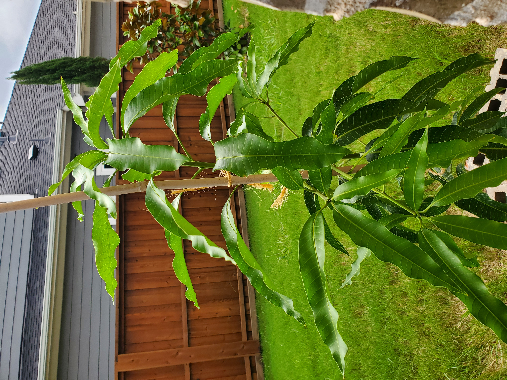
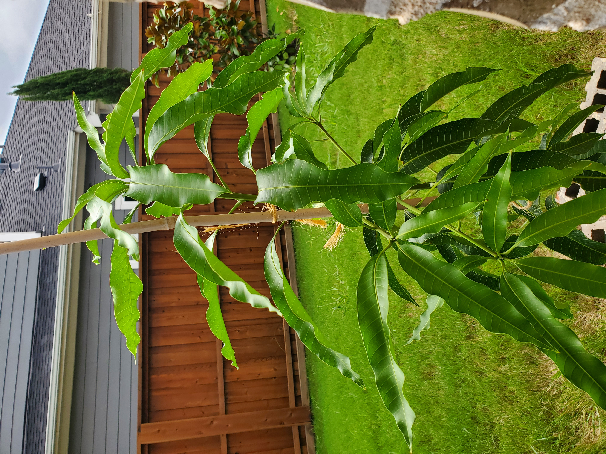

Mangifera indica (Mango)
This is my favorite plant.
I began growing this plant a long time ago, about
in the beginning of 2018. It was a shoot that came
up from the compost pile and I decided to care for it.
This plant thrives in the intense heat of the summer here in Texas.
However, during winters, this plant must be brought indoors because
it is quite sensitive to frost and will not be able to
tolerate cold temperatures for long periods of time.
The picture on the right was purchased from Fast Growing Trees
and I must say, I am very satisfied with their product.
 
